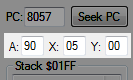
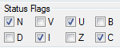
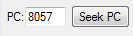
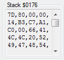

Содержание
Значения регистров и состояния флагов хранятся в файлах сохранений эмулятора.
Подробнее про регистры и флаги читай в разделах с командами процессора.
Здесь отображены байты, которые в данный момент находятся в каждом из трех регистров.

Регистр A - аккумулятор. X и Y - индексные регистры.
Во время паузы эмулятора можно вручную перезаписывать байты в этих регистрах, что повлияет на результат работы команд, которым необходим байт в одном из этих регистров.
В адреса записываются байты, которые были вписаны вручную, а не те, которые изначально были загружены в регистры сответствующими командами.
Регистр статуса процессора (P) - регистр флагов. Здесь отображены состояния 8-ми различных флагов.

Если галочка не стоит, это означает что состояние флага = 0. Если галочка стоит - состояние флага = 1.
Все 8 флагов технически являются одним 8-битным регистром. Каждый бит этого регистра отвечает за определенный флаг.
Кликая по галочкам, можно вручную менять состояние флагов на 0 или 1 во время паузы эмулятора, что повлияет на работу команд, результат которых зависит от состояния определенных флагов.

После выполнения команды BEQ должен быть переход на адрес $8110 при условии Z = 1, однако подменив вручную состояние флага Z на 0, условие команды не выполнится и перехода не будет.
Регистр PC, который содержит в себе адрес выполняемой команды из NES Memory. Адрес указан рядом с кнопкой Seek PC.

Во время паузы эмулятора можно вручную менять адрес, по которому будет выполняться следующая команда.
Подробнее читай в статье с кнопками.
Регистр указателя стека (SP). Стек располагается в NES Memory $0100-$01FF. Информация по стеку видна здесь.

Справа от слова Stack показан адрес (указатель), в который будет помещен байт при следующем использовании стека. Под этим адресом отображен список байтов, которые находятся в диапазоне $0100-$01FF справа от этого указателя стека.
Байт из текущего адреса $0176 не отображается в списке. Байт #$7D находится по соседнему адресу $0177.
Если указатель стека = $01FF, то байты в списке не отображаются, поскольку адреса выше $01FF не относятся к стеку.
Адрес SP нельзя изменить вручную. Он изменяется только при выполнении некоторых команд.